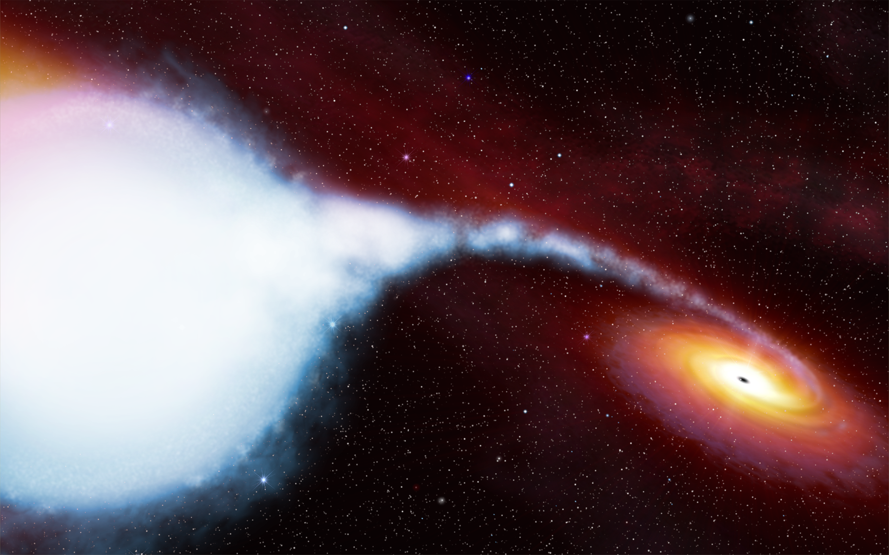

DIBS

Cygnus X-1
Cygnus X-1 is a high mass X-ray binary with a O9.7Iab blue supergiant donor star with a mass of ~ 19M⊙ and a ~ 15M⊙ black hole accretor, orbiting their common center of mass with an orbital period of 5.5 days (Orosz et al. 2011). Cygnus X-1 was discovered in 1964, and it is the first source widely accepted to be a black hole.

Artist’s representation of Cygnus X-1. Credit: NASA/ESA